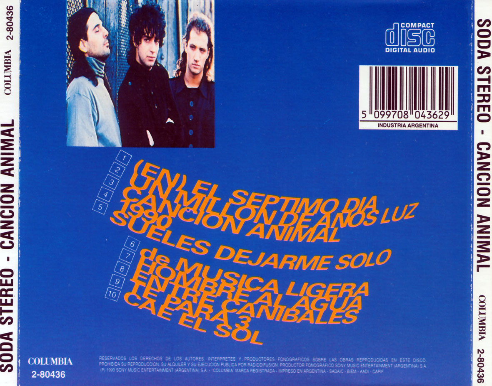

Canción Animal es el quinto álbum de estudio de la banda de rock argentina Soda Stereo, lanzado el 7 de agosto de 1990. Fue grabado entre junio y julio de 1990 en Criteria Studios de Miami, con la producción de Gustavo Cerati y Zeta Bosio. Es considerado por la crítica como uno de los discos más importantes y emblemáticos en la historia del Rock en Español, apareciendo en el top 10 en múltiples listados de los mejores álbumes latinos de todos los tiempos, y en varios figura como primero. También es considerado por muchos como el mejor álbum de la banda. El álbum iba a llamarse originalmente Tensión e integridad, pero lo cambiaron porque el tema “Canción animal” englobaba para ellos todo el concepto del álbum.
Además, “Canción animal” encierra una paradoja: Soda Stereo siempre fue la vanguardia. Sin embargo, hay una coincidencia unánime en que su obra maestra para muchos, no es precisamente la más vanguardista sino la que se inspira en el rock nacional de los ’70: Pescado Rabioso, Color Humano y Vox Dei fluyen por las venas de este album.
El 7 de agosto de 1990, el trío presentó su quinto disco de estudio. Un disco introspectivo, crudo, cargado de riffs de guitarras y bases poderosas. Un viaje al concepto sonoro de los '70.
La "Gira Animal" recorrió todo el continente y terminó con un masivo show, el 14 de diciembre de 1991, en la Avenida 9 de Julio, donde reunió a más de 250.000 personas. También pasó por Córdoba y el estadio de Vélez.
para el 7 de agosto de 1990, esta agrupación argentina estaba dispuesta a apostar una vez más por un rock y letras en español que trascenderían por su sensualidad y provocación.
Un disco bisagra y clave en la carrera del trío, el más rockero y maduro.